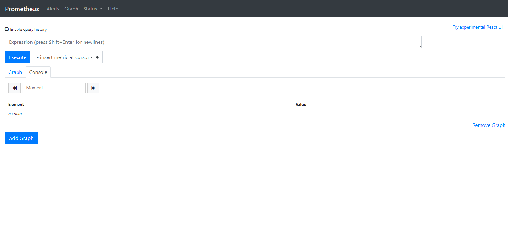

Prometheus、Node exporter安装与使用
- 环境
- 安装Docker
- 安装Prometheus
- 安装Node exporter
- 使用
- 参考
Prometheus 用于抓取或者接收Exporter采集的监控指标
架构图如下：

Prometheus监控体系架构图
环境
安装Docker
安装Docker
1
2
3
4
| yum install -y yum-utils device-mapper-persistent-data lvm2 && \
yum-config-manager --add-repo http://mirrors.aliyun.com/docker-ce/linux/centos/docker-ce.repo && \
yum makecache fast && \
yum -y install docker-ce
|
启动Docker
1
2
| systemctl start docker && \
systemctl enable docker
|
安装Prometheus
1
2
3
4
5
|
docker pull prom/prometheus
docker run -d --name prometheus -p 9090:9090 --restart=always -v ./prometheus.yml:/etc/prometheus/prometheus.yml:ro prom/prometheus -config.file=/etc/prometheus/prometheus.yml
|
prometheus.yml配置文件如下，这里假设采集192.168.1.11和192.168.1.13两台机器
1
2
3
4
5
6
7
8
9
10
| scrape_configs:
- job_name: nodeexporter
scrape_interval: 5s
static_configs:
- targets: ["192.168.1.11:9100"]
labels:
ip_address: "192.168.1.11"
- targets: ["192.168.1.13:9100"]
labels:
ip_address: "192.168.1.13"
|
安装Node exporter
1
2
3
4
5
|
docker pull prom/node-exporter
docker run -d --name node-exporter -v /proc:/host/proc:ro -v /sys:/host/sys:ro -v /:/rootfs:ro --network host -p 9100:9100 --restart=always prom/node-exporter '--path.procfs=/host/proc' '--path.sysfs=/host/sys' '--collector.filesystem.ignored-mount-points' '^/(sys|proc|dev|host|etc|rootfs/var/lib/docker/containers|rootfs/var/lib/docker/overlay2|rootfs/run/docker/netns|rootfs/var/lib/docker/aufs)($$|/)'
|
使用
Prometheus使用
浏览器访问：http://127.0.0.1:9090
如图：

Prometheus界面
Node-exporter使用
浏览器访问：http://127.0.0.1:9100/metrics
如图：
Node-exporter metrics
参考
script>